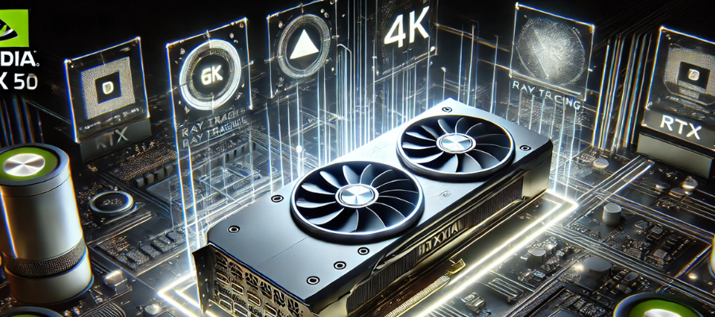

NVIDIA RTX 50 Series: A Nova Geração de GPUs Chega para Revolucionar o Desempenho Gráfico!
A série RTX 50 da NVIDIA deve marcar uma revolução significativa em relação à série RTX 40 e suas
antecessoras. Com a nova arquitetura Blackwell, a NVIDIA busca aumentar a eficiência, desempenho e
recursos gráficos, especialmente em áreas como Ray Tracing e inteligência artificial. Essas melhorias
devem resultar em uma taxa de quadros mais estável, resolução aprimorada e realismo gráfico de ponta.
Uma das expectativas principais é a melhoria no processamento gráfico em 4K e 8K, além de um desempenho
otimizado para realidades virtuais (VR) e aumentadas (AR), onde a fidelidade visual e a resposta rápida
são essenciais. Com um processamento mais rápido, os criadores de conteúdo também se beneficiarão em
áreas como edição de vídeo 3D e renderização gráfica, reduzindo o tempo de espera e aumentando a
precisão.
No mercado, espera-se uma aceleração no ciclo de renovação de GPUs, impulsionando desenvolvedores de
jogos e software a adaptar seus produtos para tirar proveito total do novo hardware. Esse movimento pode
criar uma mudança para os usuários de PCs, à medida que mais consumidores buscarão a atualização para a
série RTX 50, principalmente aqueles interessados em VR, AI e jogos de última geração.

Com o avanço da série RTX 50, a NVIDIA planeja transformar não só o desempenho gráfico, mas também a
experiência geral dos usuários. Com essa nova arquitetura Blackwell, um dos objetivos principais é
possibilitar uma jogabilidade ainda mais suave, com um processamento gráfico capaz de lidar com os mais
altos níveis de detalhes em resoluções 4K e 8K. Além disso, a eficiência aprimorada permitirá que a
placa
opere com um consumo de energia mais equilibrado, evitando aquecimento excessivo e proporcionando maior
durabilidade, mesmo em jogos e aplicações mais exigentes.
Outro destaque da série RTX 50 será a integração ainda mais profunda da inteligência artificial no
processamento gráfico. Tecnologias como o DLSS (Deep Learning Super Sampling) terão atualizações
significativas, otimizando ainda mais a qualidade visual sem comprometer o desempenho. Isso é
especialmente vantajoso para gamers e criadores de conteúdo, pois permite renderizar imagens de alta
resolução com uma fluidez inigualável. Com a IA agindo de forma a ajustar detalhes em tempo real, o
realismo gráfico se torna mais acessível e impactante para o usuário final.
A série RTX 50 também deve redefinir os padrões para realidade virtual e aumentada. Com tempos de
resposta mais rápidos e gráficos detalhados, os desenvolvedores poderão criar experiências VR e AR mais
imersivas e realistas. Essa evolução é crucial para indústrias como a do entretenimento e a de educação,
onde a precisão gráfica e a resposta instantânea do sistema fazem toda a diferença. A expectativa é que
a série abra novas possibilidades para jogos e aplicações de treinamento em ambientes de realidade
mista.
Além disso, o impacto da série RTX 50 poderá ir além do mercado de hardware. Espera-se que a nova linha
incentive uma revolução na forma como desenvolvedores criam jogos e softwares, focando em explorar todo
o potencial do hardware gráfico de ponta. Essa movimentação pode acelerar a transição de tecnologias
gráficas avançadas para o consumidor comum, tornando os dispositivos de alta performance mais acessíveis
e disseminando experiências de altíssimo nível a um público maior.